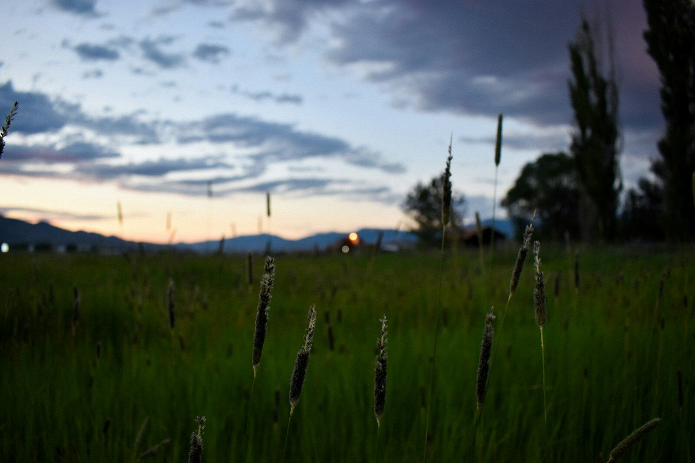

LiDAR on an autonomous mower: what it sees, and what it does not
RTK tells a mower where it is. Obstacle detection tells it what is in front of it, and those are two different jobs done by different hardware. This page covers what LiDAR actually does, how it compares with radar and cameras, what the machine does when it detects something, and the parts of the problem no sensor on the market solves yet.

What LiDAR is, in plain terms
LiDAR stands for Light Detection and Ranging. The sensor fires pulses of invisible laser light, measures how long each pulse takes to come back, and turns that into a distance. Do that tens of thousands of times a second across a sweep, and you get a three dimensional picture of everything around the machine: how far away it is, how tall it is, and what shape it is.
The shape part is what matters. A camera sees a pattern of colour and has to work out what it is looking at. Radar sees that something is there and roughly how far away. LiDAR sees form. That is the difference between knowing an object is present and having some chance of telling a fence post from a crouching person from a soccer ball.
It also works in the dark, because it makes its own light. Combined with RTK positioning, which is satellite based and equally indifferent to daylight, that is why an autonomous mower can run a paddock at two in the morning and a ride-on cannot.
- Measures distance, not colour. Works at night, in shade, and against low sun.
- Builds shape. Height and outline, not just presence.
- Short range by design. On a mower it is watching the next few metres, not the horizon.
- Degrades in heavy dust, fog and rain. Airborne particles return pulses of their own.
- Separate from navigation. The machine still follows an RTK path it was mapped onto.
Three ways a mower detects an obstacle, and none of them wins outright
Most commercial machines use more than one. When you are comparing units, the question is not whether a machine has LiDAR, it is which combination it has and what it does with the information.
LiDAR
Good at: shape and height, working in the dark, distinguishing a low obstacle from open ground, giving the machine a chance to classify what it has found rather than just stop for everything.
Weak at: heavy dust, fog and driving rain, where the beam scatters. Also the most expensive of the three, which is why it appears on commercial machines and not on consumer ones.
Radar
Good at: exactly the conditions LiDAR struggles in. Dust, rain, low sun and glare barely touch it, which is why agricultural robots lean on it. Robust, cheap and reliable.
Weak at: telling you what the object is. Radar reports that something is there. It does not give you enough shape to separate a person from a post, which matters a great deal on ground where people walk.
Cameras and vision
Good at: colour, texture and context. Reading the difference between cut grass and a garden bed, or spotting a boundary a laser would not see as an obstacle at all.
Weak at: darkness, glare, heavy shadow and anything visually ambiguous. Vision systems are improving quickly, and they are still the least mature of the three on complex ground.
Detecting something is the easy half. What the machine does next is the real answer
Ask any supplier what their machine does when it detects an obstacle. There are three possible answers and they are not equivalent.
It slows down
The mildest response. Useful for something the machine is fairly confident it can pass safely, and not much use for anything it cannot identify.
It stops and alerts
The safe response, and the one the machine we have selected gives on contact. It halts, flags the position and waits for a human. Safe, and it costs you a cycle if nobody is watching the alerts, which is precisely why someone needs to be.
It reroutes around the obstacle and carries on
The answer everyone wants, and the one to press hardest on. Autonomous reroute after contact is still maturing on the platform we have selected, and we say so rather than selling you a firmware release. Ask when it ships, and ask what happens in the meantime.
What LiDAR does not solve
This is the section most suppliers leave out, and it is the one that decides whether a machine suits your ground.
It does not finish the close-in work. On a structured commercial site we plan on 60 to 70 percent of the close-in work being autonomous. Edges, posts, cable trays, inverter pads and garden beds still need a person. Better sensors have narrowed that gap over the last two years. They have not closed it.
Tall grass hides low obstacles from every sensor. Post detection in long grass is a known limitation, not a quirk of one machine. If the grass is over the object, no laser, radar or camera reliably finds it. The answer is mapping the hazards as no-go zones before the first cut, which is a job done by a person with a remote and a plan.
It is not fire detection. The machine has no spark detection and no external fire sensing. Fire risk is managed operationally: no-go zones over gravel and high risk margins, charging stations sited on cleared ground, no charging on total fire ban days.
Detection is not certification. A sensor suite is a capability. Third party machinery safety certification is a test somebody else has paid for and signed. They are different things, and on our machine the certification is in progress. We do not describe it as certified, compliant or approved for public spaces, and we will not until the documents are in hand.
It does not replace controlling the site. Everything above is why our rule is fenced and controlled ground with mowing scheduled for when people are not there, rather than unsupervised operation in a public space. That line comes from what the technology can actually do today.
And it does not remove the person. Someone maps the site, swaps blades and battery packs, recovers a bogged machine and keeps the records. That is a skilled local technician role, and it is worth budgeting for rather than discovering.
The practical payoff is working after dark
A ride-on needs an operator, and an operator needs daylight and a reason to be there. LiDAR makes its own light and RTK comes from satellites, so neither cares what time it is.
On a solar farm that means cutting overnight while nobody else is on the ground, and finishing before the day crew arrive. On a campground or a resort it means the machine works between guests rather than around them. In a Queensland summer it means running in the cool hours and parking the machine through the worst of the heat.
We have written the solar version of this in detail, including the parts that do not work yet: automated vegetation management for solar farms. The short version of why the clock matters is in the best time to mow a solar farm is 2am.
- No daylight dependency. Laser ranging and satellite positioning both work at night.
- Fewer people on the ground. The safest hours to run an autonomous machine are the hours nobody else is there.
- Heat management. Night cycles keep the machine and the battery out of the worst of the day.
- Noise. Electric and quiet enough that overnight operation is a scheduling question, not a complaint.
Six questions worth asking any supplier about obstacle detection
Including us. If a supplier cannot answer these in writing, that is itself an answer.
Which sensors, exactly?
LiDAR, radar, cameras, ultrasonic, a contact bumper, or a combination. Ask for the spec sheet rather than the web page. Marketing copy and spec sheets disagree more often than you would expect.
What does it do when it detects something?
Slow, stop, or reroute. Get the answer for each sensor, because a machine can reroute around something it sees early and only stop for something it touches.
What has it been tested against?
A post is not a person, and a standing person is not a child sitting down in long grass. Ask what was tested, in what conditions, and what changed as a result.
Is there third party machinery safety certification?
Not a self declaration, and not an electrical or radio mark, which covers something different. Ask who tested it and ask to see the certificate.
Who carries responsibility for the autonomous system?
Some manufacturers state this explicitly. Others leave it with whoever is operating the machine. Procurement will ask, so ask first.
What is still on the roadmap rather than shipping?
Ask which capabilities are in the machine today and which are promised in a firmware release. Then ask what happens on your ground in the meantime.
Common questions about LiDAR and obstacle detection
Where to go next
RTK positioning, explained
The other half of the system. How a machine knows where it is to about two centimetres, what gets installed at your property, and what an install day looks like.
Commercial robotic mower buyer's guide
Every commercial machine available in Australia compared on slope, real coverage and certification, with the units converted consistently.
Automated vegetation management for solar farms
What a machine can cut under and between panel rows, what stays with the crew, and the fire and positioning limits stated plainly.
Facts and FAQs
The broader set of questions about autonomous mowing on acreage and commercial ground.